쇼케이스 이용 및 관리
유리쇼케이스 스텐쇼케이스 차이, 보여 줄 것인가 버틸 것인가

손님이 상품을 보고 고르는 매장이라면 사방에서 잘 보이는 유리쇼케이스가, 물청소가 잦고 충격이 많은 주방·작업 공간이라면 녹슬지 않고 튼튼한 스텐쇼케이스가 맞습니다. 많은 매장은 손님 쪽은 유리, 작업 쪽과 하부는 스텐으로 섞어 두 장점을 함께 씁니다.
안녕하세요. 카페, 정육점, 꽃집, 식당까지 업종별 쇼케이스를 자체 제작하는 한성쇼케이스입니다.
쇼케이스 상담을 하다 보면 "유리로 할까요, 스텐으로 할까요?"라는 질문을 자주 받습니다. 유리는 예쁘지만 깨지거나 김이 서릴까 걱정되고, 스텐은 튼튼하지만 상품이 덜 보일 것 같아 망설여지시죠.
두 소재는 어느 쪽이 더 좋다기보다 맡는 역할이 다릅니다. 유리는 상품을 보여 주는 소재이고, 스텐은 물과 충격을 견디는 소재입니다.
오늘은 두 쇼케이스가 실제로 어디서 다른지, 우리 매장에는 무엇이 맞는지 판단하는 기준을 정리해 보겠습니다.
1. 진열 효과: 손님이 무엇을 보느냐
유리쇼케이스는 앞면이나 사방이 유리라 손님이 매장 어디서든 상품을 볼 수 있습니다. 케이크, 디저트, 꽃처럼 눈으로 보고 고르는 상품은 유리쇼케이스에서 진열 효과가 가장 큽니다.
사각형, 사선형, 곡선형처럼 형태를 고를 수 있어 매장 인테리어와 맞추기도 좋습니다.
스텐쇼케이스는 본체가 스테인리스라 내부가 보이지 않거나 앞면만 일부 유리로 되어 있습니다. 상품을 보여 주기보다 보관과 꺼내기가 중심인 주방 냉장고, 반찬 보관고, 정육 보관용에 많이 쓰입니다.
- 손님이 보고 고르는 상품이면 유리를 먼저 검토하세요.
- 보관·작업 위주라면 스텐이 관리하기 편합니다.
2. 결로와 단열
유리는 스텐보다 열이 잘 통해, 매장 습도가 높은 여름철에는 유리 표면에 김이 서리기 쉽습니다. 김이 서리면 상품이 뿌옇게 보여 유리쇼케이스의 장점이 사라집니다.
그래서 유리쇼케이스는 이중 단열 유리나 히팅 유리 같은 결로 대책과 균일한 냉기 순환이 함께 들어가야 합니다.
스텐 본체는 단열재를 두껍게 넣을 수 있어 냉기를 오래 붙잡아 두는 데 유리합니다. 문을 자주 여닫는 주방에서는 이 차이가 온도 안정성으로 이어집니다.
매장 안이 늘 서늘하고 건조한 편이라면 유리쇼케이스의 결로 걱정은 줄어듭니다. 설치할 자리의 계절별 환경을 함께 이야기해 주시면 유리 사양을 정하는 데 도움이 됩니다.
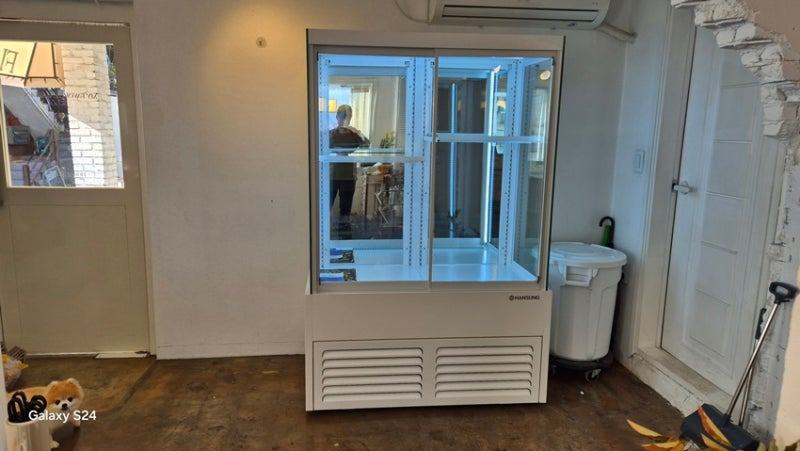
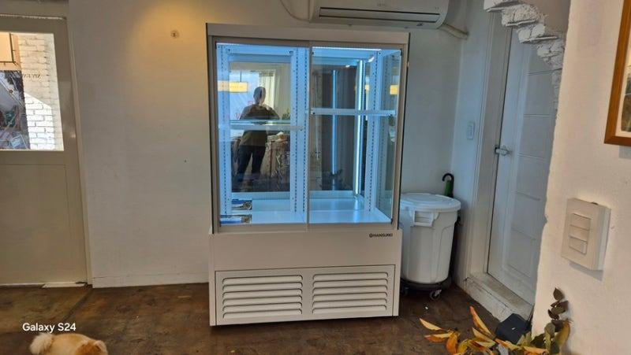
3. 내구성과 청소
스텐은 물에 닿아도 쉽게 녹슬지 않고 긁힘이나 충격에 강합니다. 바닥 물청소가 잦은 정육점, 국물이 흐르는 반찬가게 주방, 화병 물을 다루는 꽃냉장고 내장처럼 물기와 접촉이 많은 곳에 맞습니다.
유리는 지문과 얼룩이 잘 보여 자주 닦아야 하지만, 닦으면 바로 깨끗해 보이는 장점도 있습니다. 안전을 위해 강화유리나 접합유리를 쓰는지, 모서리 마감은 어떻게 되는지 확인해 보세요.
- 물청소가 잦은 곳은 하단을 스텐으로 하세요.
- 유리 종류와 모서리 마감을 확인하세요.
4. 섞어 쓰는 구성이 가장 흔합니다
실제 매장에서는 두 소재를 섞는 경우가 많습니다. 손님 쪽 앞면과 진열부는 유리로 보여 주고, 하부 기계실과 사장님 쪽 뒷면, 바닥판은 스텐으로 튼튼하게 만드는 방식입니다.
이렇게 하면 진열 효과와 관리 편의를 함께 챙길 수 있습니다. 문도 손님이 여는 앞문, 직원이 채우는 뒷문, 양쪽 모두 여는 양문형 중 매장 동선에 맞게 고를 수 있으니, 소재와 문 방식을 함께 정해 보세요.
체크리스트
- 손님이 보고 고르는 상품인지
- 매장 습도와 결로 대책
- 물청소·충격이 많은 자리인지
- 유리 종류와 모서리 마감
- 유리·스텐 혼합 구성 검토
- 문 방식(앞문·뒷문·양문)
현장에서 자주 보는 경우: 유리쇼케이스 형태와 조명을 정할 때
유리쇼케이스를 선택하시는 사장님들은 형태와 조명에서 가장 오래 고민하십니다. 저희는 세련된 사각형, 모던한 사선형, 부드러운 곡선형 중 매장 인테리어에 맞는 형태를 고르시도록 하고, 문은 앞문형, 양문형, 뒷문형 중 매장 동선과 운영 방식에 맞춰 정합니다.
조명은 LED로 밝기를 고르게 하고 발열을 줄이며, 색은 상품 본래 색을 자연스럽게 보여 주는 백색과 포근한 분위기를 내는 황색 중에서 매장 콘셉트에 맞춰 선택하실 수 있습니다.
유리쇼케이스는 이런 진열 요소를 함께 정할 때 장점이 살아납니다.
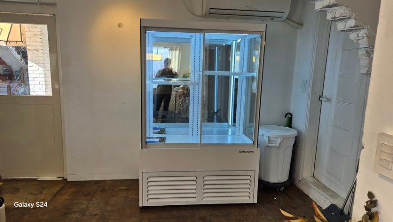
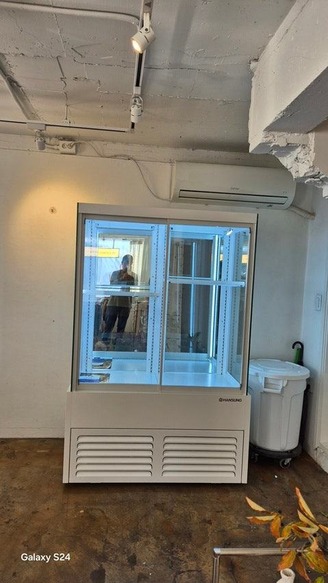
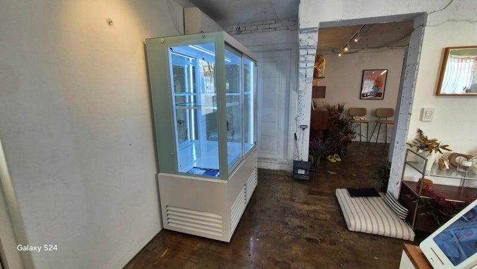
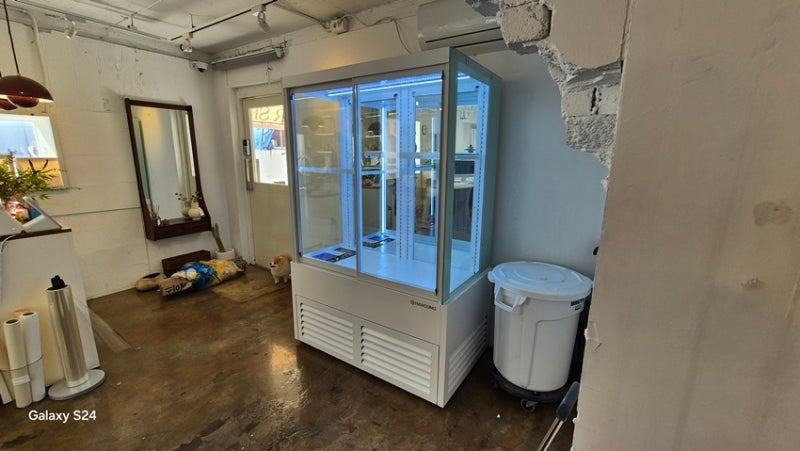
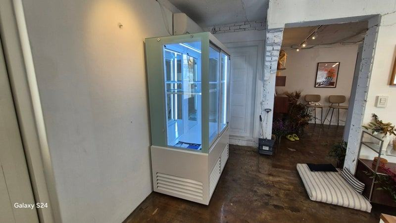
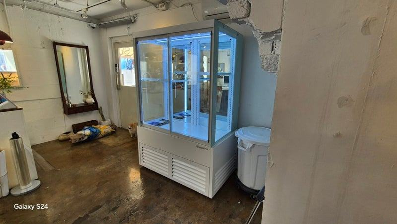
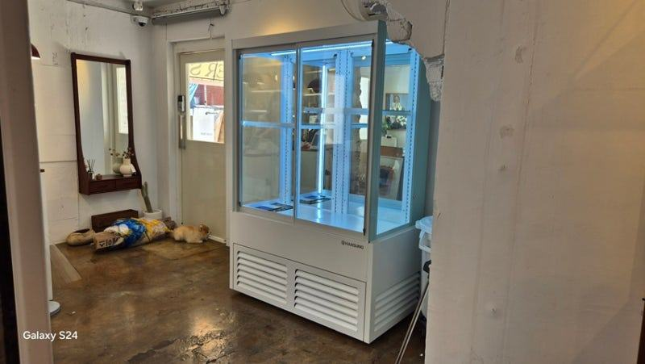
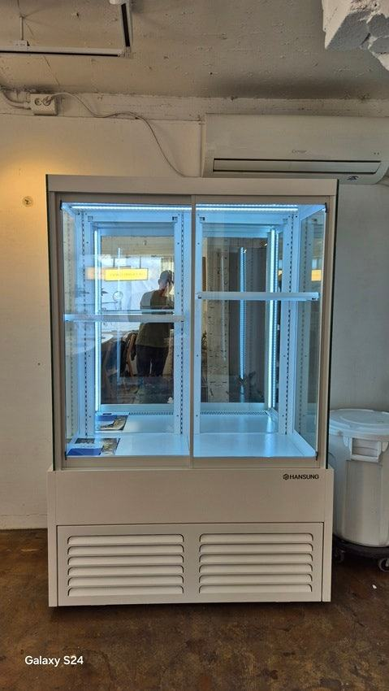
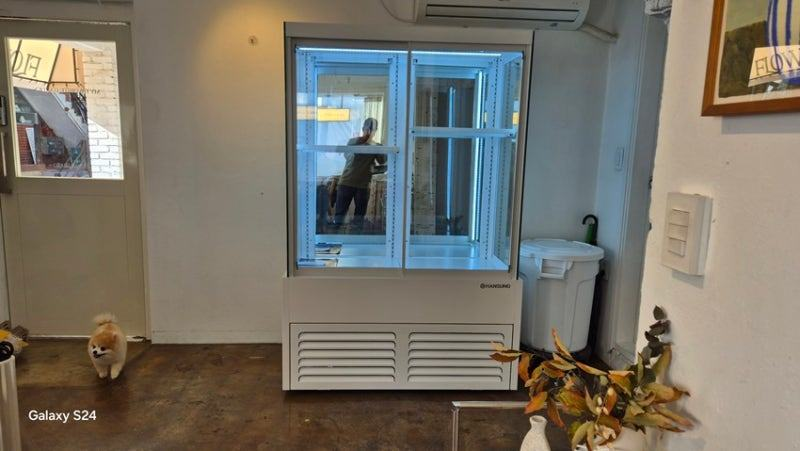

자주 묻는 질문
유리쇼케이스는 깨질 위험이 없나요?
쇼케이스용 유리는 강화나 접합 방식을 써서 일반 유리보다 튼튼합니다. 다만 강한 충격이 가는 작업 공간에는 스텐 구성을 함께 검토하시는 편이 좋습니다.
스텐쇼케이스도 앞면을 유리로 할 수 있나요?
가능합니다. 본체와 하부는 스텐으로, 앞문이나 진열부만 유리로 하는 혼합 구성을 많이 씁니다.
유리쇼케이스 김서림은 어떻게 줄이나요?
이중 단열 유리나 히팅 유리 같은 결로 대책이 들어간 제품을 고르시고, 문 패킹 상태와 매장 환기를 함께 관리해 주세요.
설치 위치가 출입문 바로 앞이면 김서림이 더 잦아질 수 있습니다.
매장 조건에 맞춰 만드는 한성쇼케이스
원하시는 제품 사진과 설치할 공간 사진만 보내 주셔도 매장에 맞는 구성을 추천해 드립니다.
- 전국 240여 개 A/S 전담 센터 운영
- 본사 대량 자재 매입으로 품질 대비 합리적인 가격
- 유럽제·삼성 냉각 콤프레셔 적용
- 국내 최초 쇼케이스 전문 디자이너 상주
매장 폭과 원하는 진열 구성을 알려 주세요. 실측과 견적을 안내해 드립니다.
031-986-2458